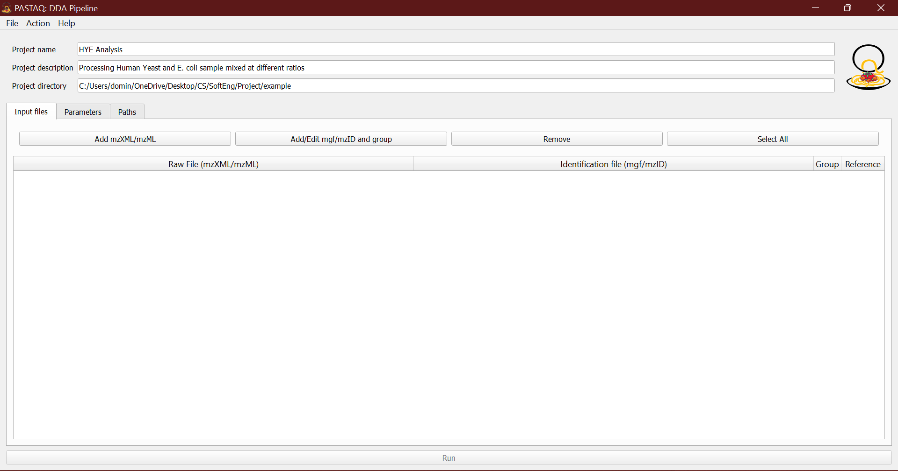
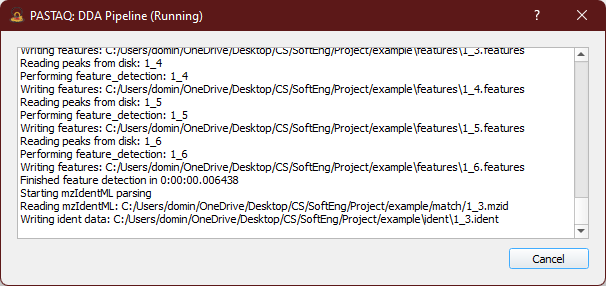

PASTAQ-GUI Tutorial
PASTAQ-GUI can be used to setup the parameters of PASTAQ’s DDA pipeline, enabling the users to easily pre-process projects with an user friendly interface. Note that this application is currently in beta and thus unexpected errors can occur.
When starting PASTAQ-GUI you will be greeted with the following screen:

The File menu button will provide a drop down for file
related actions the user can perform.

The new project button initialize a project in the given directory,
creating a parameters.json file. This directory will also
be used as the output directory of the pipeline.
With the Open project button, a
parameters.json file can be loaded. This parameters file
is the same that is generated in the output directory when the DDA
pipeline is run from the GUI or using the Python bindings. This
enables loading past projects even when the GUI was not used.
Once a project is active we can edit the project name and description and have access to the rest of the parameters. Setting up the project name and description is optional but recommended to have some context about the analysis for the future.

The first step would be to add some samples in mzXML or mzML format
using the Add button in the Input files tab.
Multiple files can be selected at once in the file explorer.

Selecting multiple samples and pressing the Edit button
allow us to change the sample group and add identification files in
mzIdentML format via the browse button or simply dragging and dropping
them. For example, in a control vs disease experiment, mark the
samples from each group accordingly.

If multiple input files are selected when assigning the identification
files, they will be matched by the file name without the extension.
For example 1_1.mzXML will be matched with
1_1.mzid. This allows selecting all identification files
in a directory and letting the auto-match do the work instead of
manually assigning each identification file to the mzXML/mzML raw
data.

Repeat this for all sample groups as needed.

Alternatively if you upload the unprocessed .mgf files,
the GUI is capable of automatically processing the uploaded files to
.mzID. If we switch over to paths tab, provided you have
MSFragger, idconvert and the corresponding .params loaded when running
the pipeline the appropriate .mzID will be generated for
the .mzXML or .mzML.
Next, switch over to the parameters tab to configure the
pre-processing settings. The default parameters should be a good
starting point, but the user must adjust the
Instrument settings to match the type of mass
spectrometer used, the resolution at the given m/z and the expected
average FWHM of retention time peaks (in seconds).

In case you wish to reset the parameters back to default this can be
achieved via the The Action menu button
With all this in place, the project can be saved via the
File menu on the top left. Otherwise pressing the
Run button at the bottom of the screen the pipeline will
be executed and the parameters will be saved automatically. The
progress can be seen in the progress dialog pop-up, tracking each
pre-processing. Note that while the pre-processing can be stopped at
any time with the Cancel button, doing so when writing
intermediate files to disk will result in corruption, and its not
recommended. If this happens, deleting the corrupted files will result
in those files being processed again in subsequent runs.

Once the pipeline has finished, the Ok button will
appear, which is safe to press to dismiss the progress dialog. Now you
should be able to see the output files in the project directory. We
recommend looking at the quality folder to explore the
quality control plots generated by the pipeline. The different
quantitative tables can be found on the quant directory.